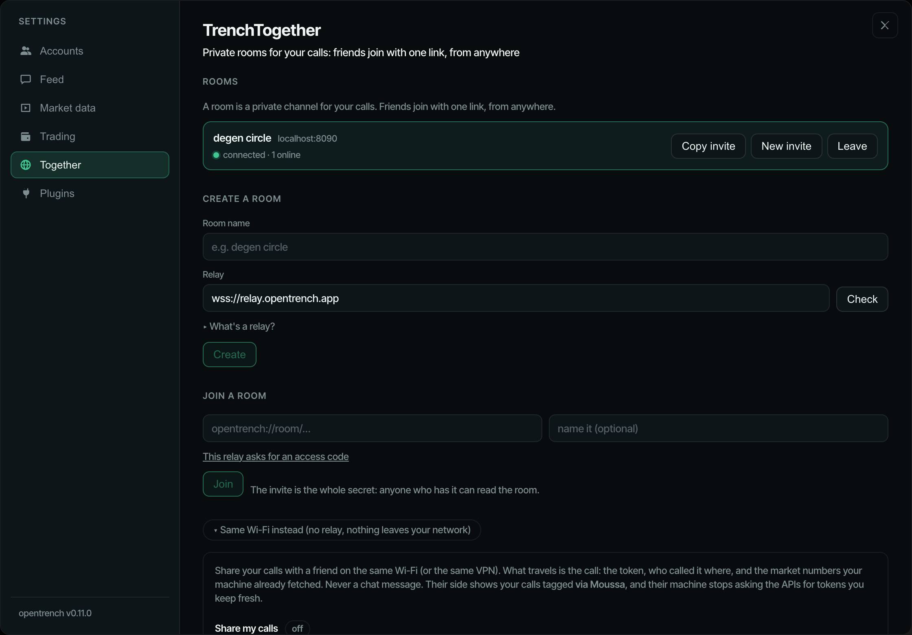

Share calls with friends
TrenchTogether: a room for your circle's calls. One link joins it, from anywhere. Everything is encrypted on your machine, and the relay in between reads nothing.

01What a room is
A room is a private channel for your calls. It lives on a relay, a small server that passes messages between the room's members and cannot read them, because every message is encrypted on your machine with a key only the invite carries. Friends join with one link, from anywhere, and nothing on your side listens on the internet.
Create one
- ⚙ → Together → Create a room.
- Give it a name. The relay field is prefilled with the default relay; leave it, or paste the address of a relay you host yourself (Host a relay).
- Press Create. The room appears as a card with a status dot and how many members are online.
- Press Copy invite and send the link to your friends however you talk to them.
The invite looks like opentrench://room/<relay-host>/<key>. The key is the whole secret: whoever has it is in.
02Join a room
Either click the opentrench://room/… link. The desktop app opens Settings → Together with the invite filled in; press Join.
Or paste the invite into Join a room and press Join. Pasting works on the web page too.
The invite carries the relay's address, so there is nothing to configure. If that relay asks for an access code, the app asks you for it once.
03What travels
Only calls: the token, who called it, in which chat, and when. On joining, a member sends its calls of the last 24 hours (newest first, at most 200) so the room catches up; after that, every new call from one of its own chats, at most once per token every 30 seconds.
Never chat messages. Nothing anyone wrote in a channel leaves your machine.
Each app prices tokens itself, from the chain, like any other token on its screen. No market numbers travel between friends.
A call that arrived through a room shows via <name> on the card, with the name the friend set in the Together page. Calls that came via someone are not sent on again, so a room cannot echo.
04Rotate and leave
Rotate makes a new key, so a new room id and a new invite. Everyone has to join again with the new link; anyone still holding the old one is out. That is the only way to remove someone.
Leave disconnects from the room and forgets its key on your machine. The others keep going.
05Same Wi-Fi instead
The older mode is still there, under Same Wi-Fi instead on the same page. It uses no relay: nothing leaves the network.
- Turn on sharing. Your machine announces itself on the local network, and friends see you by name under Nearby and press Connect.
- You get an Allow / Ignore prompt with a four-character code shown on both screens. Allow does the pairing.
- Not found under Nearby (a VPN, a stricter router)? Copy the pair by link string and send it over; the other side pastes it. It carries your LAN address and port
3211.
06Trust
The relay sees your IP address and how much you send, never a call or a name, because everything is encrypted with the key in the invite and the relay never gets that key. Joining a room means trusting its relay's operator with that much, and no more.
Anyone with the invite is in, so treat it like a group password: share it where only the people you want can read it, and rotate it if it gets out.
What the operator can and cannot see
Can see: each member's IP address, its member id (a random value the app made once at install; it is not a name), when it connects, how many messages it sends and how big they are, and how many rooms exist.
Cannot see: any call, token, chat name or display name. Those are inside the ciphertext, and the key stays in the invite. The relay does not learn who is in a room beyond the member ids, and it cannot tell one room's purpose from another's.
07What a relay does
A relay is the server side of a room. It is a dumb fan-out: it takes each message a member sends and passes it to the room's other members. It only ever carries ciphertext. Every message is encrypted on the sender's machine with the key from the invite, and that key never reaches the relay.
It is one Node process with no database. Rooms live in memory, plus one JSON file per room on disk if you give it a data directory, so a restart keeps the last day of messages and a friend who joins late still catches up.
Your invite carries your relay's address; friends configure nothing. Create a room with your relay in the relay field, copy the invite, and everyone who joins with it lands on your relay.
The app ships the default relay's address prefilled in the create form. Hosting your own is a few commands and means nobody but you sees your circle's traffic. The code is in relay/ in the repository. Node 22.
08Hosting
Three routes. Each ends with an address starting wss:// that you paste in the relay field when you create a room.
Fly.io
The shipped fly.toml asks for 256 MB in one region and mounts a volume for the room buffers. From a checkout of the repo:
cd relay
fly launch --copy-config --yes
fly volumes create relay_data --size 1
fly deployfly launch picks an app name (or change app in fly.toml first). Your relay's address is then wss://<app>.fly.dev.
To make it private, set the access code before deploying:
fly secrets set RELAY_ACCESS_CODE=<something long>fly.toml already sets RELAY_TRUST_PROXY=1, which Fly needs for the per-IP limits to see real client addresses.
Docker
docker build -t opentrench-relay ./relay
docker run -d --name relay -p 8080:8080 -v relay-data:/data opentrench-relayThe image keeps its room files in /data; the named volume keeps them across restarts. Add -e RELAY_ACCESS_CODE=<code> to make it private. The app connects over wss://, so put a TLS proxy in front (the Caddyfile below, pointed at port 8080) and use wss://<your host> as the address.
Any Node host behind Caddy
Build and run:
npm ci -w relay
npm run build -w relay
PORT=8080 RELAY_DATA_DIR=./data node relay/dist/index.jsRun it under whatever keeps processes alive on your host (systemd, pm2, a screen session). Then a Caddyfile, complete; Caddy fetches the certificate itself:
relay.example.com {
reverse_proxy 127.0.0.1:8080
}caddy run with that file, point the DNS name at the host, and the relay's address is wss://relay.example.com. Behind Caddy or any other proxy that sets x-forwarded-for, start the relay with RELAY_TRUST_PROXY=1.
The access code
Without a code, anyone who knows your relay's address can create rooms on it. They still cannot read anyone else's room, but they use your machine. Set RELAY_ACCESS_CODE to close that: the relay then refuses every connection that does not carry the code.
Give the code to your friends alongside the invite. When they create or join a room on your relay, the app asks for the code and remembers it for that relay. Without it the room card says relay wants an access code.
Checking it works
curl https://<host>/answers
{"name":"opentrench-relay","v":1,"rooms":0}rooms is how many rooms the relay holds right now. The app calls the same address to confirm that what you typed in the relay field is a relay before it creates or joins a room there.
09Environment
| Variable | Default | Meaning |
|---|---|---|
PORT | 8080 | Port to listen on (all interfaces). |
RELAY_ACCESS_CODE | unset | When set, only apps that know this code can create or join rooms here. For a relay private to your circle. |
RELAY_MAX_ROOMS | 1000 | Rooms the relay will hold at once. |
RELAY_MAX_MEMBERS | 50 | Members per room. |
RELAY_DATA_DIR | unset | Directory for one <room>.json per room; unset keeps buffers in memory only, so a restart loses them. |
RELAY_BUFFER_HOURS | 24 | How long a room keeps its recent messages for late joiners (also capped at 2000 messages). |
RELAY_TRUST_PROXY | 0 | 1 to take the client address from fly-client-ip or the last x-forwarded-for entry for the per-IP limits. Turn it on only behind a proxy that overwrites or appends that header itself (Fly does; the shipped fly.toml sets it). Off, the relay uses the socket address. |
Other limits are fixed: a message is at most 64 KB, a member may send 30 messages a second, a room with no member for 7 days is dropped, file included.
10Updating
Pull the repo, rebuild, redeploy: fly deploy on Fly, docker build and a new docker run for Docker, npm run build -w relay and a restart on a Node host. Room files on the volume survive.
Members are told to update only if the protocol version moves. The app then shows this relay needs updating on the room card until you redeploy. A relay newer than an app refuses that app with too-new, so update relays first.
Troubleshooting
The room card shows one of these next to its dot.
| It says | What to do |
|---|---|
connecting… | Wait a few seconds. The app retries on its own, 2 s then up to 15 s apart. |
offline · retrying | The relay is unreachable or your network dropped. Nothing to do unless it stays that way; then check the relay's address with https://<host>/ in a browser. |
invite changed — ask for the new one | Someone rotated the room. Your key no longer matches; leave this room and join with the new invite. |
this relay needs updating | The relay runs an older protocol than your app. Whoever hosts it has to pull and redeploy (Updating). |
relay wants an access code | This relay is private. Ask its operator for the code and enter it when the app asks. |
room is full | The relay's member limit for this room is reached (50 by default). Someone has to leave, or the operator raises RELAY_MAX_MEMBERS. |
could not reach <host> | The address in the invite does not answer. Check it, or ask the person who sent the invite whether the relay is up. The default relay shows this until it is brought up. |